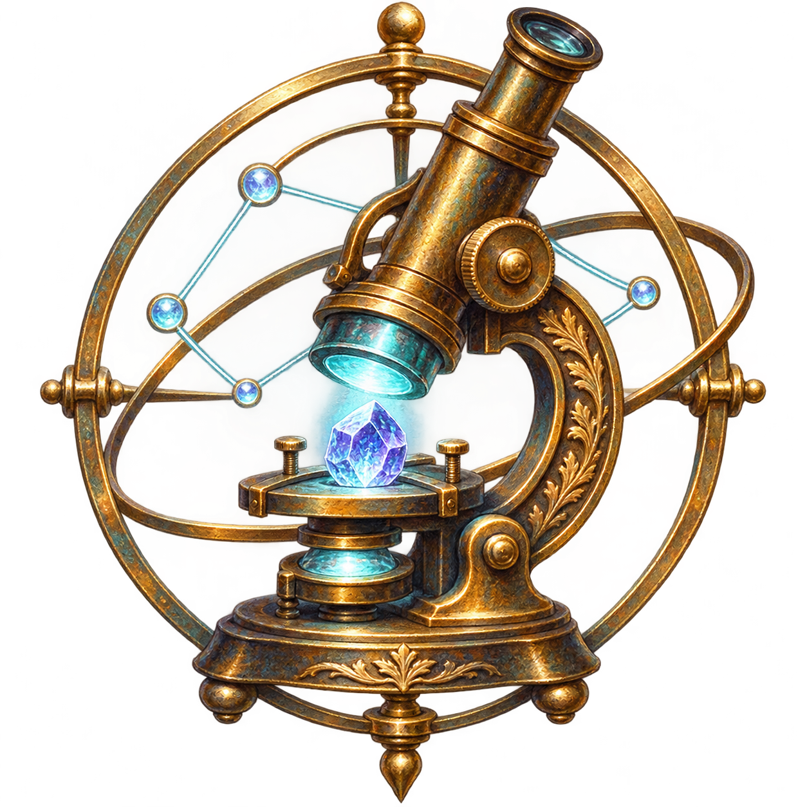

Science & research
Claimipedia Science
Scientific inquiry with explicit models, evidence and reproducible checks.
This microsite introduces the work and its selected source bindings. Source inspection records declarations, rather than claiming a deployed application runtime.
Inspect sources & shared capabilities →First use case
Relational Geometry Programme
An audited Spin(2,3) relational and response geometry research corpus. Explore its models, evidence and open questions.
Explore the programme ↗Agent-assisted research
Mission Control
Sourcery’s agent harness and automatic workflow mechanism coordinates the work behind an inquiry, using the internal job system to manage tasks, agents and results.
Explore Mission Control →